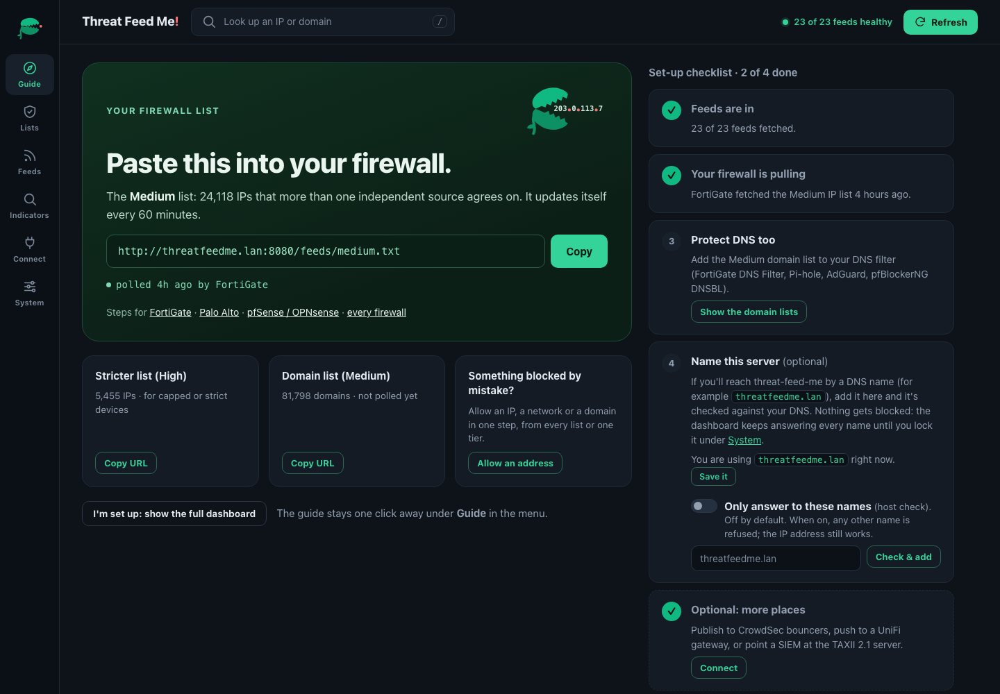
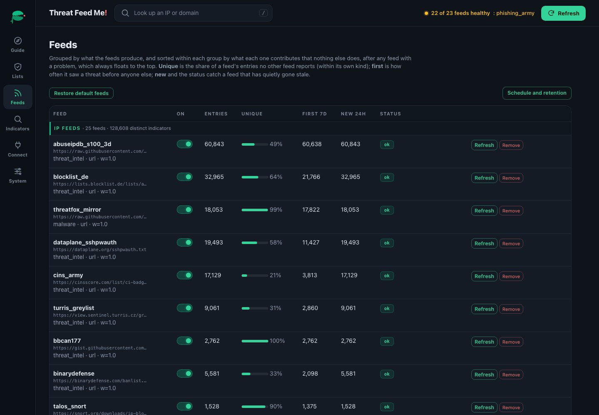
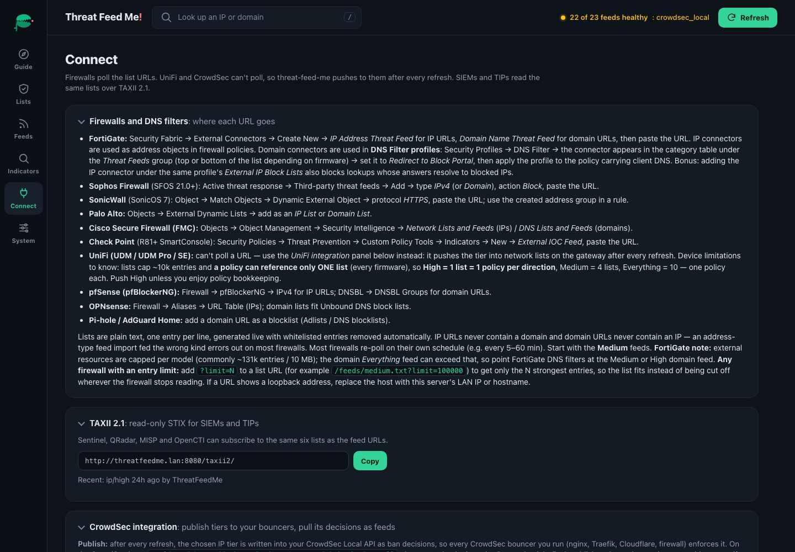

From docker run to blocking in five minutes
The dashboard walks you through it. Every screen below is the real v2.5 interface.
Paste one URL into your firewall
A fresh install opens on a set-up guide: the Medium IP list with a Copy button, and a checklist that ticks itself off from what the server can see: feeds fetched, a firewall pulling the list, a DNS filter pulling the domain list. Add a DNS name for the box and it checks the record resolves to this server, without blocking anything.

Six lists, each with proof it's being pulled
High, Medium and Everything, for IPs and for domains. Every card shows how many entries its URL serves right now and “polled 3m ago by FortiGate”, so a typo'd URL can't fail silently.
See what every feed is worth
Per feed: entries, the share nobody else reports, how often it saw a threat first, what's new, health and false-positive flags. Problems float to the top; overlap map, country heatmap and problem TLDs sit underneath.

Firewalls, DNS filters, SIEMs, bouncers
Step-by-step placement for eleven firewalls and DNS filters, the TAXII 2.1 URL for your SIEM, and CrowdSec and UniFi panels that push after every refresh.

Coming from MineMeld?
Palo Alto Networks retired MineMeld (hosted end of life: 1 August 2021) and archived the open-source project in March 2023. Threat Feed Me does the job most MineMeld deployments did, aggregate public intel and hand it to firewalls and SIEMs, with nothing to wire.
| MineMeld | Threat Feed Me |
|---|---|
| Miners, one per feed | 22 curated feeds built in, plus any URL or uploaded list, added from the dashboard |
| Aggregator processors | Removes duplicates, then spots feeds that copy each other and counts them once, sorting what's left into High / Medium / Everything |
| Whitelist miners | Whitelist IPs, CIDRs, domains or *.wildcards, globally, per feed or per tier |
| EDL feed outputs | Plain one-per-line lists at /feeds/… that PAN-OS External Dynamic Lists (and every other firewall) take as-is |
| TAXII miners | TAXII 2.1 collections as feeds (MISP, OpenCTI, ISACs on 2.1) |
| TAXII DataFeed (TAXII 1.1 / STIX 1.x) | A read-only TAXII 2.1 server of STIX 2.1 Indicators |
| Office 365 and cloud IP-range miners | Not yet: application allow-lists are planned for 2.6 |
| A node graph you build and maintain | Nothing to wire: add a feed and it votes |
The full migration guide covers every common MineMeld use, what carries over and what doesn't. Not included: arbitrary processing graphs, TAXII 1.x, or writes over TAXII. Need a full threat-intel platform with case management? Pair it with OpenCTI or MISP; Threat Feed Me is the light piece that turns public intel into lists your devices enforce.
Deploy
Runs on a small on-prem box or VM. No tuning, no keys. Copy, paste, done.
docker run -d --name threat-feed-me -p 8080:8080 \ -v threatfeedme-data:/app/data alexlinos/threat-feed-me:latest # then open the dashboard at http://<this-server-ip>:8080
Multi-arch image on Docker Hub: alexlinos/threat-feed-me:latest.
On first start it fetches the 22 feeds (16 IP feeds plus URLhaus, OpenPhish,
Phishing Army, HaGeZi TIF, Phishunt, and DRB-Ra C2 domain feeds), removes duplicates, sorts them into the three lists, and starts serving them,
then auto-refreshes every 60 minutes. Open the dashboard and the set-up guide takes it from
there. Opt-in sources: your own
CrowdSec detections and blocklists,
HoneyDB (including sensors you
operate) and AlienVault OTX.
Prefer compose? See the
README.
Three lists, from strict to everything
Every IP and domain lands on one of three lists, each a live URL your firewall polls. Pick the one that fits how strict you want to be.
High strictest
Several feeds that don't copy each other report it, or a primary source such as URLhaus lists the domain. The smallest list, for strict devices or ones with an entry limit.
Medium recommended
At least two unrelated feeds report it. The right default for most firewalls.
Everything widest net
Everything any feed reports, duplicates removed, including your own lists.
How it decides, in plain terms
MineMeld merged feeds and removed duplicates. Threat Feed Me does that too, then asks whether the feeds reporting an IP are really separate witnesses.
- Copies don't count twice. Many public feeds republish the same upstream list. Threat Feed Me compares every pair of feeds by what they contain. When one is mostly a copy of another, its vote on the IPs they share counts for very little, so three feeds that all republish Spamhaus DROP add up to about one vote, not three. So when one upstream list gets an address wrong, the feeds copying it can't make that mistake look like several sources agreeing and push it onto your High list.
- Real agreement still wins. When two feeds that don't copy each other report the same IP, that counts as two votes and the IP moves up to Medium. More unrelated feeds agreeing moves it to High.
- Mistakes cost the feed that made them. Every feed starts equal. When you mark an IP as a false positive, the feeds that listed it lose some weight, so their other IPs rank lower. The penalty lasts as long as your whitelist entry does; remove the entry, or clear the flag, and the feed's weight comes back.
- Rotating feeds don't cause churn. Some feeds drop and re-add the same IPs every day. Threat Feed Me keeps counting a feed's vote for three days after it drops an IP, so those IPs stay put instead of flapping on and off your firewall. After three days, the vote ends.
- A small model spots the ones that come back (optional). Some feeds rotate fast: an IP drops off today and is back tomorrow. A small model, trained only on your own install's history, predicts which dropped IPs are likely to return and nudges them up slightly. It never moves an IP onto a stricter list by itself; it decides which IPs make the cut when a firewall can only take the top entries.
The lines between High, Medium and Everything are drawn where the scores naturally separate, and held steady so the lists your firewalls pull don't reshuffle every hour. They move only when the feeds themselves change.
Each URL returns plain text, one entry per line, generated live with the whitelist applied.
The same tiers exist for malicious domains at /feeds/domains/high.txt,
medium, and all — for the DNS-filter side of the firewall (or
Pi-hole / AdGuard Home). IP URLs never contain a domain and vice versa.
.csv and .json variants are available for SIEM use.
Many firewalls limit how many entries one list can hold (a mid-range FortiGate takes about
131,000). Add ?limit=N to any URL to get only the N strongest entries, so the list fits instead of
being cut off wherever the firewall stops reading.
Beyond the firewall
The same consensus lists, delivered to the rest of your stack.
CrowdSecv2.5
Publishes your chosen tier into your CrowdSec Local API as ban decisions, so every bouncer you run (nginx, Traefik, Cloudflare, iptables) enforces it. Pulls your own CrowdSec detections, the community blocklist and Console lists back in, each voting as its own source, and never counts its own.
TAXII 2.1 for SIEMsv2.5
Six read-only collections of STIX 2.1 Indicators with confidence, sources and expiry, for Microsoft Sentinel, QRadar, Splunk, MISP and OpenCTI. Stable IDs, so indicators update in place.
UniFi gateways
UDMs can't poll a URL, so Threat Feed Me pushes the lists into UniFi network lists after every refresh, for IPs and domains, no CyberSecure required.
Proof it's working
Every URL on the dashboard says when it was last polled and by what ("by FortiGate"), and every feed shows its health, uniqueness and overlap, so a dead feed or a typo'd URL can't hide.
Wire it into your firewall
Paste a feed URL into your firewall's external threat-feed / block-list setting — or, for UniFi gateways that can't poll URLs, let the built-in push integration maintain the lists on the gateway for you. The dashboard shows the exact URLs and per-vendor steps.